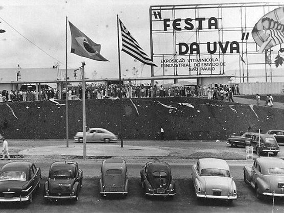

A Uva e o Vinho de Jundiaí
Jundiaí possui uma forte tradição na produção de uvas e vinhos. A história da cidade está muito ligada à agricultura familiar e, especialmente, ao cultivo da uva, que se tornou um dos símbolos da cultura e da identidade local.
A produção de uvas ganhou destaque na cidade com a chegada de imigrantes italianos, que trouxeram conhecimentos e tradições relacionadas ao cultivo da videira e à produção de vinho. Com o passar dos anos, essas práticas foram transmitidas entre as famílias e ajudaram a construir a tradição vitivinícola da região.
Entre as variedades cultivadas, a uva Niagara Rosada merece destaque. Adaptada ao clima e às condições da região, ela se tornou uma das marcas da produção de Jundiaí. Além de ser consumida fresca, a uva também é utilizada na fabricação de vinhos artesanais, sucos e outros produtos.
O vinho de Jundiaí representa mais do que uma bebida: ele carrega parte da história e da cultura da cidade. Muitas propriedades rurais mantêm pequenas produções familiares, preservando métodos tradicionais e valorizando os produtos locais.
As festas da uva e outras celebrações também ajudam a manter viva essa tradição, reunindo moradores e visitantes em torno da gastronomia, da música e da agricultura.
Assim, a uva e o vinho fazem parte da identidade de Jundiaí. A tradição passada de geração em geração, o trabalho dos produtores rurais e a valorização da agricultura local fazem desses produtos importantes símbolos da história e da cultura jundiaienses.
A Festa da Uva

A Festa da Uva de Jundiaí é uma das celebrações mais tradicionais da cidade e está diretamente ligada à história da produção de uvas e ao trabalho dos agricultores da região.
O evento valoriza a agricultura, a cultura e as tradições que foram construídas ao longo de muitas gerações. A festa começou em 1934 e, ao longo dos anos, tornou-se um importante símbolo de Jundiaí.
A produção de uvas ganhou força principalmente com a chegada de imigrantes italianos, que trouxeram conhecimentos sobre o cultivo das videiras e a produção de vinho. Essas tradições foram sendo transmitidas entre as famílias e passaram a fazer parte da identidade do município.
Durante a Festa da Uva, os visitantes podem conhecer e comprar diferentes tipos de uvas produzidas pelos agricultores locais, além de experimentar vinhos, sucos, geleias, doces e outros produtos artesanais.
A programação também costuma reunir apresentações musicais e culturais, atrações para as famílias e atividades relacionadas à vida rural.
Um dos grandes destaques da festa é a valorização dos produtores de uva de Jundiaí. Eles têm a oportunidade de apresentar seu trabalho, mostrar a qualidade de suas frutas e manter contato direto com os consumidores.
Dessa forma, o evento contribui para fortalecer a agricultura familiar e a economia local. A festa também possui grande importância para o turismo e ajuda a divulgar Jundiaí como um destino de turismo rural e gastronômico.
Mais do que uma festa, o evento representa a história e a identidade de Jundiaí. A uva está presente na cultura da cidade, nas propriedades rurais, nas famílias produtoras e nas tradições que continuam sendo preservadas.
Por isso, a Festa da Uva é uma maneira de celebrar o passado, valorizar o presente e incentivar a continuidade dessa importante tradição.